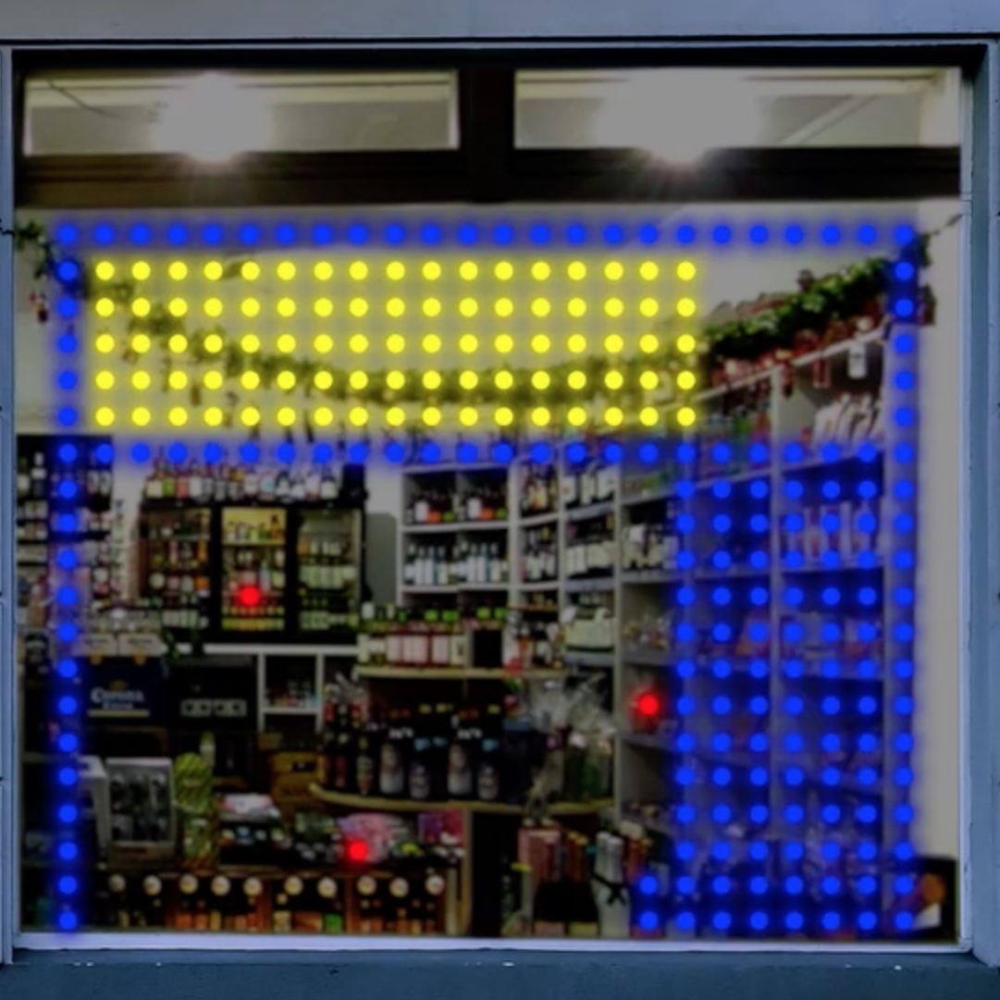
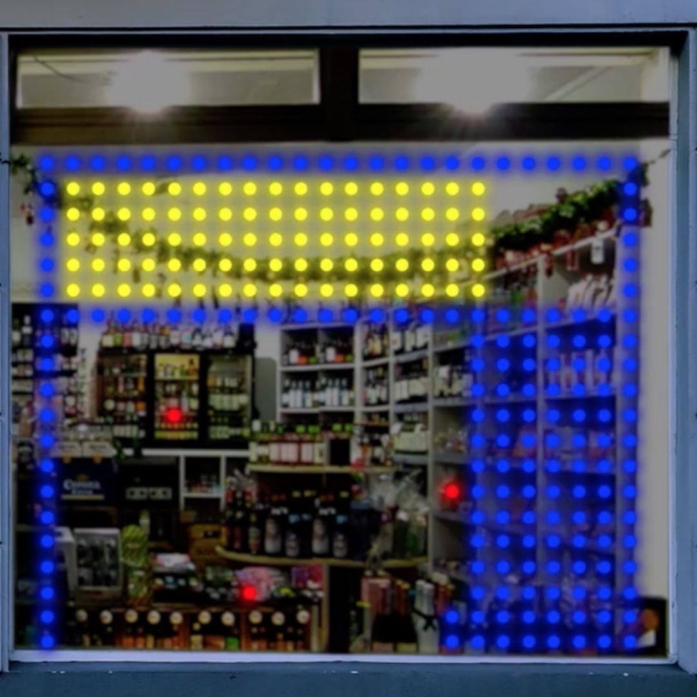

ROUTINES questions normality and everyday life in its variety and repetitiveness by showcasing three works of individual artists and groups in Spätshops spread across Halle. With each project taking a different angle on the subject, it embeds critically engaging art into our ordinary running for errands and opens an account to creative work for everybody - outside of galleries and museums. Ultimately, the exhibition engages in a dialogue with the subject which you are warmly welcome to join into.
The project includes exhibitons and interventions in local spaetis as well as a closing event at Halle's venue Schwemme.
Maxime Lethelier & Asako Fujimoto
HU/AU Bacus I SPAETI 007

 


Asako Fujimoto is a sound artist and musician interested in sonic representations of nature as well as algorithmic composition. Maxime Lethelier is a mixed media artist who works on representations of modern society.
Their work HU/AU Bacus is an audiovisual encounter with metadata of daily human movement collected by the market. Eventually, this data would become more valuable than gold or steel. The installation shows the flow of customers in relation to stock market prices accompanied by looped audio of the spot.
Emma Louise Meyer & Melanie Schulz
Room With A View I Scherins Markt


Melanie Schulz casts repetitiveness and physicalness in photography. Emma Louise Meyer analyses power mechanisms and creates performances and multimedia pieces from her findings.
Room With A View is their first collaboration that deals with the uncanny and challenging situation we all faced during the CoVid-19 pandemic. Objects and images of artists are meant to encourage fellow creators to keep working under unusual circumstances. The work integrates with the Spaeti’s environment and offers room for discovery.
Nancy Dewhurst
Left-Hand Turn I Spaeti To Go

Nancy Dewhurst’s work focuses on participatory pieces, playful encounters to research-based topics. She is interested in systems and the way these might change in the future.
Left-Hand Turn is a collection of giant shells - press them to your ear and you may hear their daily doing as you would hear the ocean through seashell resonance. It questions how we deal with the environment for our own pleasure and the need to keep up with routines even though our world is in a crisis as with the pandemic we are still experiencing.
Sven Bergelt
The Inner Cirle I Hr.Fleischer Kiosk

After studying media arts in Kiel and Leipzig, Sven Bergelt teaches at The University for Fine Arts in Leipzig. He is interested in remembrance, society and how they get interpreted in public space.
The Inner Circle was displayed last May and showed the artist walking in a rectangular shape on a field. Over and over, one hour a day for 30 days straight. The monotonous and repetitive action results in a trail, which becomes visible more and more, indicating that time has passed.
John Horton
Periphery I Hr.Fleischer Kiosk

John Horton arranges subtleness to music whether as a DJ or performing live. Originating in club music, he can now often be seen arranging circuits to musical pieces.
Periphery is an auditive reaction to The Inner Circle using processed field recordings. Starting with sounds collected in the countryside in its initial version, the piece develops during the exhibition itself, gradually layering & manipulating recordings made regularly at the kiosk back into the piece. The unseen border between the natural and urban space, coincidence and intent, micro- and macrocosm is drawn into focus.
INTERVENTION


SEP 16 I Spaeti 007 | 6-9 pm
Dj Residue | Lara Palmer
Dj Residue’s stripped down utilitarianism will be framed via Asako’s and Maxime’s piece on the data economy. His live set feels like an antidote of sorts to the shiny appearance of city centers in late capitalism. The evening will be started off with sure-shot electronics by DJ Lara Palmer.
SEP 23 I Scherins Markt | 6-9 pm
Alobhe | Jlululu
Alobhe's' overdriven tenderness will be visible through Emma Louise and Melanie’s visions of quarantine and self isolation. Brutal and hell-bent, her music is as broken as our society became in 2020. She will play live. Jlululu gets you up to operating temperature with two hours of red hot post club music from the digital decks.
CLOSING
SCHWEMME | SEP 25 | 5-10 pm


Ana Bogner
John Horton - The Sum Of Its Parts
The Desert Prophets
GREGOR.
We will draw ROUTINES to a conclusion at Schwemme. Ana Bogner’s liberated neo-acoustics draw influence from many musics. The style of her live sets could be described as collected and iterative.
Iterative is also John Horton’s approach to The Sum Of Its Parts - the auditive documentation of ROUTINES. He will present live snippets recorded throughout the whole of the event - layered and morphed.
Both live artists will receive DJ support from The Desert Prophets who present collected oddities, outliers of what we routinely hear. WUEST’s own GREGOR. will connect the dots with records from all spheres of electronics.